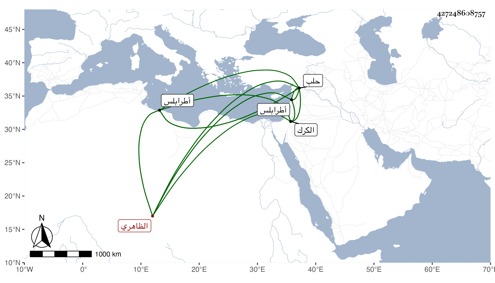

0902Sakhawi.DawLamic.ITO20230111-ara1.EIS1600.427248608757
Biography ID: 427248608757
1070
سودون الظاهري برقوق ويعرف بسودون الجلب ، ترقى في أيام ابن أستاذه الناصر مع أنه لم يكن من أعيان مماليك أبيه لكنه كان مقداما شجاعا وعنده جرأة فلذلك تقدم وشاع اسمه وناب في الكرك من قبل الناصر ثم استبد بها وأظهر العدل ، وكان من مثيري الفتن ثم أعطى نيابة طرابلس ثم نيابة حلب قبل دخوله طرابلس وبعد قتل الناصر وتوجه إلى حلب وهو مجروح من سهم أصابه إلى أن مات في ربيع الآخر سنة خمس عشرة . ذكره شيخنا باختصار
